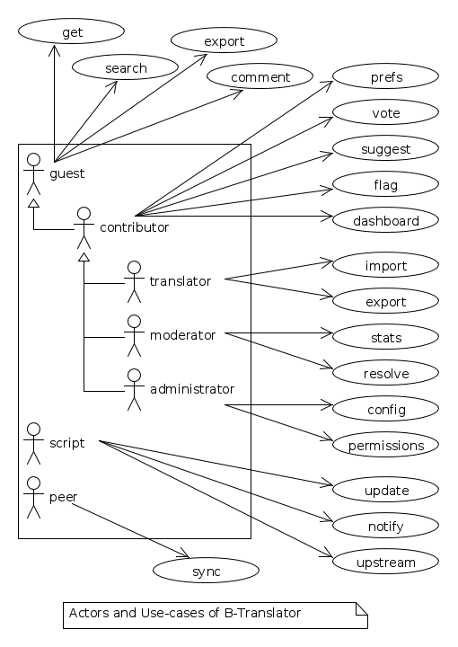
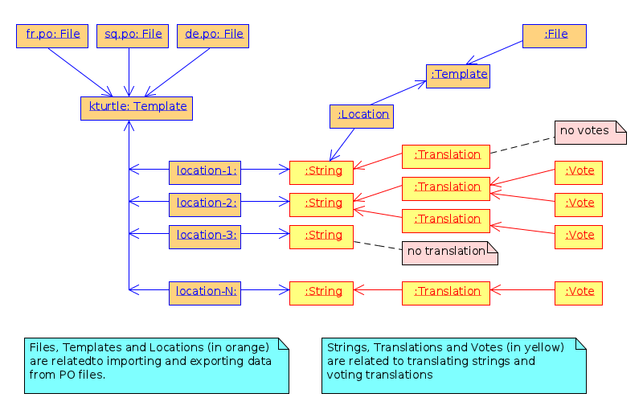
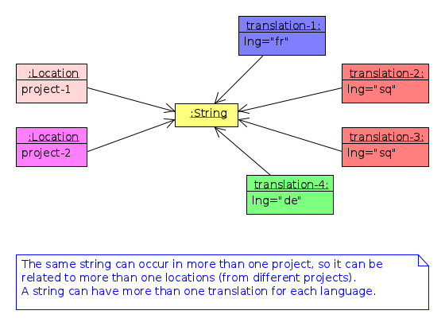
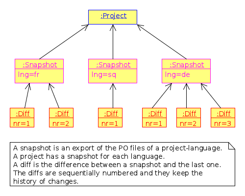

B-Translator as a Software Engineering Project
The project B-Translator will be presented, trying to illustrate through it some software development/engineering concepts and practices (how they are actually applied in this project).
Table of Contents
- 1 Introduction
- 2 Conception of the software
- 3 Description of its features and functionality
- 4 Analyzing the functionality in more details
- 5 Designing the software
- 6 Construction (implementation/development)
- 7 Managing the project
- 8 Documentation
1 Introduction
Software Engineering is an interdisciplinary branch between programing and project management, that tries to make efficient and effective the process of developing new software, by identifying and trying to use principles and practices that have proved to be successful on the past projects. It was born as a response to the failures in software projects for a long time.
Programing is an art, and so is the project management. As a result software engineering cannot be an exact discipline, although the word 'engineering' seems to imply a set of well defined steps and rules. However, some guiding principles can be useful when applied wisely to the current situation. Anyway, the most important factor still remains the experience: you are good at managing software projects if you have enough experience with doing it.
There are several models (or methods, or approaches, or paradigms) for managing a software project. The simples (and oldest) one is the waterfall model. The basic steps of the waterfall model are these:
- requirements
- analysis
- design
- implementation
- testing
- deployment
- maintenance
These steps should be performed in the life cycle of every software development project. However the waterfall model is not very realistic, because in practice is very difficult to get everything right with the first attempt. For example while gathering the software requirement, most probably we can miss something; or maybe later there can be a request for updating the requirements.
A better approach is the Iterative and Incremental model. The basic steps are the same, however the development is performed in several cycles, with each of these steps performed in almost each cycle. During the cycles the software is improved from an initial prototype to a full featured product.
There are other methodologies and variations as well, like Agile Software Development, Extreme Programing, etc. However the bottom line remains that the best method to use depends on the concrete software that is to be developed, and any method that can be used should be adopted to match the current case.
Therefore, here I will describe what I have done on the project B-Translator, trying to identify the principles and practices of Software Engineering that are used, instead of trying to fit this project to one of the standard approaches.
2 Conception of the software
Before a software starts to be built, the idea of such a software has to come somehow to mind. The idea for building such a software usually comes to mind because there is some problem to be solved, or some need to be fulfilled, which for some reasons, cannot be done (or cannot be done properly) by the existing software. Before anything else, a software engineer/developer should have a clear idea of the problem (or problems) that the software is trying to solve, and the overall aim (or goal) or the software.
2.1 The problems that B-Translator tries to solve and its goals
First of all, B-Translator is a software that helps to get feedback about l10n (localization, translations of programs into other languages). It also helps to unify all the different translations and to ensure consistency among the translations. It is intended to be used for the translations of programs into Albanian, but it can be used for any other languages as well.
The motivation for developing such a software is that the traditional (current) l10n work-flow requires highly dedicated people, and does not allow (or at least does not facilitate) small contributions from random people that do not have such a high dedication, determination and enough free time.
Also, the process of reviewing and correcting translations is not easy and does not facilitate the feedback from the users of the translated programs. Although the translators are usually very good and professional, they can make mistakes too, and sometimes they may miss the best translation for some certain terms. Some feedback from the crowd of the users would be more than welcome, if there are tools to collect and facilitate it.
Another problem with translations is that sometimes they are not consistent. The same string has different translations in different programs, and sometimes even the same translator may have provided different translations for the same string in different cases. This happens mainly because each program/project has its own translations and there is no central repository for all the translations.
To summarize, the goals of this software are these:
- Getting feedback about the translations from a wide crowd of people and users. This feedback can be in terms of votes for the best translation (when there are more than one translations for the same string), or it can be a new alternative translation (for an existing translation), or it can be a new translation suggestion (for a string that is not translated yet).
- Helping to ensure consistency among the translations.
- Merging translations from different sources (for example translations made on Launchpad and those made on KDE or GNOME).
2.2 Are there any existing alternatives to B-Translator?
To my knowledge, there are no such existing tools. People frequently ask how B-Translator is different from Pootle. Pootle, as far as I know, is just an online PO file editor; it doesn't have any features for collecting feedback from a crowd of people that are not translators.
2.3 The meaning of B-Translator
The name of the software is not the most important thing, however it should be somehow related to the basic idea of the software and to its goals, and it should be different from any other software. And of course it is better to be a nice name, rather than an ugly one.
The codename B-Translator can be decoded like Bee Translator, since it aims at collecting very small translation contributions from a wide crowd of people and to dilute them into something useful.
It can also be decoded like Be Translator, as an invitation to anybody to give his small contribution for translating programs or making their translations better.
3 Description of its features and functionality
After having a clear idea of the overall aim and goals of the software, the software engineer should go into details about the features that the software should have and how it should work, so that it can properly achieve its goals. This is mainly a description of what the software should do and how it should do it, preferably in a simple language that even non-technical people (non-developers) can understand.
Maybe we cannot get everything 100% correct right from the beginning, however this approach is much better than starting to code right away, having just some vague ideas of what we are trying to build. Of course, we will take the chance later to correct and improve the feature requirements, as things become more clear.
3.1 The features of B-Translator
Here is a description of the main desired features of B-Translator.
3.1.1 Open access
Everybody should be able to use the system for the purpose of getting translation suggestions for a certain string, even unauthenticated (anonymous/guest) users. Furthermore, it should be possible to use an API (web services), so that these suggestions can be retrieved and used even by external applications.
3.1.2 Authenticated voting
Submitting votes or new suggestions will be allowed only for the subscribed users (which have agreed to help and contribute). No contributions from anonymous/guests will be accepted.
3.1.3 Tracking votes
Votes and suggestions will not be anonymous. For each vote or suggestion, the user who submitted it will be recorded and saved. This will allow the user to see all the strings that he has already voted for, and also to change any of the votes, if he later changed his mind. At the same time it will prevent multiple votes by the same user for the same translation.
3.1.4 Highly customizable
The system should have a flexible configuration and customization page. This means that the user should be able to customize how much he would like to help and contribute. For example:
- how many translation votes per day (an upper limit)
- which communication means he prefers (email, facebook, google+, twitter, website, android app, iPhone app, etc.)
- which projects or packages he would like to focus on (for example, if the user selects the package KDE, only strings that belong to a project on this package will be sent to him for review and feedback)
- which languages he would like to use as primary and secondary source languages (for example a user that is not confident in English, may choose to use French as a primary language and Italian+Spanish as secondary/helper languages)
- sequential or random selection of strings (random is the default, but if the user is interested in just one or a few projects, he may prefer to review the strings sequentially)
3.1.5 Evaluation algorithms
The contribution and performance of the users should be measured and evaluated using certain algorithms and/or heuristics. The users will be awarded points based on their performance. Probably some rewarding mechanisms can be integrated later for the top contributors.
3.1.6 Detailed and comprehensive reporting and statistics
Different kinds of reports and statistics related to users, projects, activity etc. should be supported and provided.
3.1.7 Integration with the existing workflow of the project translations
Project translators will continue to work with their preferred tools (like Pootle, Lokalize, etc.). They will also continue to use their preferred workflows (the way that they coordinate their translation work with each-other and with the project releases).
This system should help them to get feedback and possibly any new suggestions or translations from a big crowd of the contributors. The system should provide means and tools for easy integration with the workflow of the project translations.
For example, it should allow the translation maintainers to import their existing translation files (PO files), and to export translation files that contain the most voted translations, as well as new suggestions (for translated strings) or new translations (for untranslated strings). It should also allow them to get the latest changes (suggestions, translations, etc.) since the last time that they checked, or since a predefined moment in the past.
The latest changes should be exported in a format that is easy to review, modify and apply (diff or ediff).
4 Analyzing the functionality in more details
In the previous sections we discussed defining the aim and scope of the software (conception) and describing the desired features and functionality in general terms. Both of these steps belong to the phase called defining requirements of the software. The next step (or phase) is to analyze in more details how the software is supposed to work, and it is called analysis (or functional analysis).
Functional analysis is usually performed by identifying the actors (users or other programs/components that are interacting with our software/system), by identifying use cases (all the different cases when the actors need to interact with our software/system), and describing each use case (the details of how each interaction is done).
In order to be clear and concise in describing such things, diagrams are often useful. The standard for drawing diagrams in software engineering domain is UML (Unified Modeling Language).
4.1 The actors and use-cases of B-Translator
The actors and use-cases that can be identified for B-Translator are these:
-
guest (anonymous user)
- get translation suggestions for a string
- search strings and translations
- export translations
- comment on translations
-
contributor (authenticated user)
- all the use-cases of guest
- customize his own preferences and settings
- vote (or like) translations
- suggest new translations
- flag inappropriate comments or translations
- check his own contribution details in a dashboard, and how it compares with the others
-
translator
- all the use-cases of contributor
- import translation files
- export translations and suggestions
-
moderator
- all the use-cases of contributor
- access statistics and other details
- resolve flagged comments and translations
-
administrator
- manage overall software configuration
- manage user access rights and permissions
-
script
- update translation data with the latest versions
- notify users about relevant issues
- apply suggested translations upstream, wherever possible and suitable
-
peer B-Translator installation
- request sync data (in case there are several B-Translation installations, they should be able to synchronize the data with each-other, if needed)
These actors and use-cases are also presented in the following diagram (which is drawn using Umlet):

Actors and Use-cases of B-Translator.
There are also the cases when the software is accessed through a third party application (for example a Facebook, LinkedIn, Google+, Android, iPhone, or desktop application), through a web-service API, however these use-cases can be reduced to either the guest or contributor cases.
I am not going to describe the details of each use-case because it would take lots of space. Anyway, most of them are almost obvious.
4.2 Interfaces
4.2.1 Suggestion interface
This is the form where the (authenticated) user is presented with an English string and several translation suggestions for it, and he votes the one that he thinks is the best, or provides another suggestion which he thinks is better.
The string to be translated is selected randomly, unless the user has selected 'sequential' on his settings. The selection of the string is also done so that it complies with the restrictions imposed by the user on his settings (for example only from a certain project).
The selection of the string should be also influenced by certain algorithms and heuristics, which should try to give more exposure to the strings that need more votes. For example if a string already got 10 votes and another one got just 2 votes, the second one should be more likely to be selected.
This interface should be able to integrate somehow with facebook, email, google+, etc.
4.2.2 Query interface
On this form anybody (registered user or anonymous) can supply a string in English, and the system will return the translation suggestions related to it and the corresponding votes that each suggestion has.
If the English string does not have an exact match on the DB, a list of similar strings will be returned and the user will choose to check one of them.
This functionality of querying suggestions will be offered also by a web service so that it can be used by any external programs.
4.2.3 User configuration interface
Here the user customizes his settings, as described in the functional requirements. Some of the things that he can customize are:
- how many translation reviews per day (default one)
- which communication means he prefers (email, facebook, google+, twitter, website, android app, iPhone app, etc.)
- which projects or packages he would like to focus on (for example, if the user selects the package KDE, only strings that belong to a project on this package will be sent to him for review and feedback)
- which languages he would like to use as primary and secondary source languages (for example a user that is not confident in English, may choose to use French as a primary language and Italian+Spanish as secondary/helper languages)
- sequential or random selection of strings (random is the default, but if the user is interested in just one or a few projects, he may prefer to review the strings sequentially)
4.2.4 Export and import interfaces
Usually everybody can export PO files, but only the users with certain permissions can import.
4.2.5 Admin interfaces
The admin should be able to customize the overall behavior of the module, to check activity, to get reports and statistics, to maintain the data (backup, restore, update) etc.
5 Designing the software
Design is a description in logical (abstract) terms of the parts and components that will make up the software, how they are composed, how they interact with each-other, etc. The UML diagrams can be useful again for describing concisely and clearly the entities, their relationships and interactions. It is the last layer of abstract description, before the implementation (coding) of the software starts. However frequently there is not a clear distinction line between analysis and design, and between design and implementation.
The design usually describes the database entities and relationships, the interfaces of the application, APIs (Application Programing Interfaces), classes and objects and their relationships, the most important processes and algorithms, etc. A good design should try to capture only the most important things, leaving out the obvious or unimportant things.
5.1 The DB schema of B-Translator
The DB tables and their fields:
- Files
-
A PO file that is imported and can be exported from the
DB.
- fid : serial
- Auto-increment internal identifier.
- filename : varchar(250)
- The path and filename of the imported PO file.
- hash : char(40)
- The SHA1() hash of the whole file content.
- potid : int
- Reference to the template (POT) for which this PO file is a translation.
- lng : varchar(10)
- The code of the translation language.
- headers : text
- Headers of the imported PO file, as a long line. Needed mainly for exporting.
- comments : text
- Translator comments of the file (above the header entry). Needed mainly for exporting.
- uid : int
- Id of the user that imported the file.
- time : datetime
- The date and time that the record was registered.
- Templates
-
POT files that are imported.
- potid : serial
- Auto-increment internal identifier.
- tplname : varchar(50)
- The name of the POT template (to distinguish it from the other templates of the same project).
- filename : varchar(250)
- The path and name of the imported POT file.
- pguid : char(40)
- Reference to the project to which this PO template belongs. it come from).
- uid : int(11)
- Id of the user that registered the project.
- time : datetime
- The date and time that the template was imported.
- Projects
-
A project is the software/application which is
translated by the PO files.
- pguid : char(40)
- Project Globally Unique ID, pguid = SHA1(CONCAT(origin,project))
- project : varchar(100)
- Project name (with the release appended if needed).
- origin : varchar(100)
- The origin of the project (where does it come from).
- uid : int(11)
- Id of the user that registered the project.
- time : datetime
- The date and time that the project was registered.
- Locations
-
Locations (lines) where a l10n string is found.
- lid : serial
- Internal numeric identifier of a line.
- sguid : char(40)
- Reference to the id of the l10n string contained in this line.
- potid : int
- Reference to the id of the template (POT) that contains this line.
- translator_comments : varchar(500)
- Translator comments in the PO entry (starting with "# ").
- extracted_comments : varchar(500)
- Extracted comments in the PO entry (starting with "#. ").
- line_references : varchar(500)
- Line numbers where the sting occurs (starting with "#: ").
- flags : varchar(100)
- Flags of the PO entry (starting with "#, ").
- previous_msgctxt : varchar(500)
- Previous msgctxt in the PO entry (starting with "#| msgctxt ").
- previous_msgid : varchar(500)
- Previous msgid in the PO entry (starting with "#| msgid ").
- previous_msgid_plural : varchar(500)
- Previous msgid_plural in the PO entry (starting with "#| msgid_plural ").
- Strings
-
Translatable strings that are extracted from projects.
- string : text
- The string to be translated: CONCAT(msgid,CHAR(0),msgid_plural)
- context : varchar(500)
- The string context (msgctxt of the PO entry).
- sguid : char(40)
- Globally Unique ID of the string, as hash of the string and context: SHA1(CONCAT(string,context))
- uid : int
- ID of the user that inserted this string on the DB.
- time : datetime
- The time that this string was entered on the DB.
- count : int/tiny
- How often this string is encountered in all the projects. Can be useful for any heuristics that try to find out which strings should be translated first.
- active : boolean
- The active/deleted status of the record.
- Translations
-
Translations/suggestions of the l10n strings.
For each string there can be translations for different
languages, and more than one translation for each language.
- sguid : int
- Reference to the id of the l10n string that is translated.
- lng : varchar(5)
- Language code (en, fr, sq_AL, etc.)
- translation : varchar(1000)
- The (suggested) translation of the string.
- tguid : char(40)
- Globally Unique ID of the translation, defined as the hash: SHA1(CONCAT(translation,lng,sguid))
- count : int/tiny
- Count of votes received so far. This can be counted on the table Votes, but for convenience is stored here as well.
- uid : int
- id of the user that initially suggested/submitted this translation
- time : datetime
- Time that the translation was entered into the database.
- active : boolean
- The active or deleted status of the record.
- Votes
-
Votes for each translation/suggestion.
- vid : serial
- Internal numeric identifier for a vote.
- tguid : char(40)
- Reference to the id of the translation which is voted.
- uid : int
- Reference to the id of the user that submitted the vote.
- time : datetime
- Timestamp of the voting time.
- active : boolean
- The active or deleted status of the record.
- Users
-
Users that contribute translations/suggestions/votes.
- uid : int
- The numeric identifier of the user.
- points : int
- Number of points rewarded for his activity.
- config : varchar(250)
- Serialized configuration variables.
- Snapshots
-
Snapshots are tgz archives of project-lng
translation files.
- pguid : char(40)
- Reference to the project.
- lng : varchar(10)
- The language of translation.
- snapshot : mediumblob
- The content of the tgz archive.
- uid : int
- Id of the user that updated the snapshot for the last time.
- time : datetime
- The time of last update.
- Diffs
-
Diffs between the current state and the last snapshot.
- pguid : char(40)
- Reference to the project.
- lng : varchar(10)
- The language of translation.
- nr : smallint
- Incremental number of the diffs of a project-language.
- diff : text
- The content of the unified diff (diff -u).
- ediff : text
- The embedded diff (generated with the command poediff of pology).
- comment : varchar(200)
- Comment/description of the diff.
- uid : int
- Id of the user that inserted the diff.
- time : datetime
- The date and time that the diff was saved.
Files, Templates, Locations and Projects are related to the import/export of the PO files. Snapshots and Diffs are used to export/extract the suggestions . Projects and Categories can be used to limit the scope of the search (and other operations).
A project contains the translations of a certain application (software). A project can have several template (POT) files. A template file can have several PO files (one for each different language). Each of these PO files has many PO entries, which are stored in the table Locations.
The table Locations stores only the comments, line references, flags, previous strings, etc. of each PO entry.
The msgid (and msgctxt) of the entry is stored on the table Strings. A string can be connected to several locations, since the same string can be used on different projects.
Each string can have several translations (or suggestions) in each language. Each translation can have many votes. Each vote is given by a certain user.

Tables and their relations.

Structure of the DB.

Structure of the DB.

Structure of the DB.
5.2 API
6 Construction (implementation/development)
Implementation is the process of actually building the software. Before the implementation starts, several decisions have to be done, like:
- what platform to use
- what programing language or framework should be used
- what database should be used
- what tools to use for development
- how to coordinate the work of several developers
- programing standards to be used
- etc.
For B-Translator it was obvious that it was going to be a web application, running on a LAMP platform (Linux+Apache+MySQL+PHP). Moreover, I decided to implement it as a Drupal module, in order to take advantage of the other existing Drupal modules. Drupal is a powerful framework for building web application, it has a powerful API, and there are lots of available modules that implement various features. This way I could focus on building only the functionality that is specific for my problem, and use the available modules for building a fully functional web application. Furthermore, I decided to use Drupal7, since that was the latest version of Drupal when I started, although the support of the additional modules was not so good at that time.
For programing and development I use the Emacs editor, which is quite powerful. Also this is the editor that I am most familiar with, and I always use it for my programing tasks.
As a version control system I use git. Actually the repository of the project is hosted on github.com (https://github.com/dashohoxha/B-Translator). Usage of a version control system is a must for every software development project, because:
- It keeps all the history of changes in the project and allows you to roll back to a previous state, in case that something goes wrong.
- It allows you to have tags and branches, which help the management of the development process.
- It allows several developers to easily coordinate and merge their work with each other.
- It simplifies the task of providing patches for external contributors.
The coding style and standards of B-Translator are those used by Drupal. For unit testing and functional testing the module 'simpletest' of Drupal is used. It works by defining several test cases, and then making sure that the module passes successfully all of them.
For communication/discussions among the developers there is an IRC chatroom named #btranslator on irc.freenode.net. There is also the group/forum/mailing-list B-Translator on Google, for notifications, discussions, etc. There is as well the channel @btranslator on Twitter, mostly for notifications.
Actually, right now I am the only developer of the project, however I do hope that in the future there will be other developers and contributors as well. If you are interested to help, please contact me (at dashohoxha@gmail.com) or join the forum above.
7 Managing the project
Software engineering is not just about programing or development, but it is also about project management. Project management includes making a plan about how we are going to build the software, defining the things or tasks that need to be done, breaking down the tasks into smaller ones, assigning importance or priorities to the tasks, deciding which ones should be done earlier and which ones can be done later, defining milestones and grouping tasks to them (according to the time that they should be completed), assigning tasks to people, etc.
The majority of tasks usually are related to programing and implementation, however anything else can be a task (for example, collecting requirements, performing the functional analysis, etc.).
There are some steps or phases that are common for all software engineering projects, like:
- collecting/updating the requirements
- defining/refining features and functionality
- analyzing/understanding/describing the details of each feature
- making/correcting design decisions
- implementing or improving features
- testing, debugging and making sure that they work correctly
- etc.
How these phases are combined together depends on the software that is to be build. If you have enough experience with building such kind of software, and you have a clear idea from the beginning about what is to be built, then a waterfall approach might be OK.
However, in most cases things are not very clear right from the beginning, and they become more clear as you work on the project, do some implementation and testing, get feedback from the users, etc. This is especially true if the software that you are trying to build is kind of innovative, something that nobody else has tried to build before. In this case an 'iterative and incremental' model could be more suitable. In this model you build and release an initial product (or prototype), and with the experience collected during the process and any feedback from the users, start again from the beginning and refine the requirements, analysis etc. and build another release of the software. These cycles can be repeated as many times as necessary, and in each cycle incremental changes/improvements are made to the software.
B-Translator has followed an iterative and incremental life cycle. Although from the previous sections it may appear that things happened in a clean waterfall model, the truth is that the current requirements, functional analysis, design, etc. are the result of several iterations (cycles). For example:
- The design of the database became more clear only after starting to implement it. Actually I had to change the structure of the database several times, until it was suitable.
- Initially I depended on importing the data collected by open-tran.eu. However, I decided later to implement my own scripts for getting translation files and importing them on the DB.
- Integration with the existing workflow of the project translations was something that occurred to me later, after I had started implementation.
- Integration required the ability to import and export PO files, and this made me add some extra tables for keeping the relevant information.
- Initially I did not think about the possibility of exporting diff (and ediff) files. After deciding to implement such a feature, I had to add a few more tables in the design of the database.
- The possibility for appending comments to each translation was suggested to me by one of the translators.
The tool that I use for keeping the project organized is the mode-org of Emacs. It is a wonderful tool, simple and flexible, but has also advanced features if you need them. It can be used for keeping notes, for task management, and also for documentation writing (all the documents related to B-Translator, including this one, are composed with it). Its wiki-like syntax, combined with the power of Emacs, make it very practical.
Right now, for bug reporting, feature requests, etc. the issues section on GitHub can be used: https://github.com/dashohoxha/B-Translator/issues . Later maybe I can install trac, which is nice tool for software project management.
8 Documentation
Documentation describes how to install the software, how it works, how it should be used, etc.
8.1 Installation of B-Translator
A full distro including Drupal core (with patches) and the btranslation installation profile can be built like this:
cd /var/www/ sudo git clone https://github.com/dashohoxha/B-Translator.git sudo B-Translator/install/all.sh
For more detailed information about installation see: https://github.com/dashohoxha/B-Translator/blob/master/docs/INSTALL.org
8.2 How B-Translator works
8.2.1 Build a dictionary of l10n strings
The source of the translation data used by the software are the POT/PO files of the projects. The PO template files (POT) contain the list of translatable strings of a project (in English), and the PO translation files contain the strings and the corresponding translations for a certain language. (More information and details about PO/POT formats and the translation process is provided by `info gettext`.)
These PO files are imported into the DB of the software. This import creates a dictionary of strings and their corresponding translations. The same string can be used in more than one projects, but in the dictionary it is stored only once. However, if the same string has different translations in several projects, all of the distinct translations will be stored into the DB.
8.2.2 Collect feedback from users/reviewers
These strings and the corresponding translations are presented for review to a large community of reviewers/users. The reviewers indicate which translation they think is the best by voting for it. They can also suggest any new translations (or suggest translations for strings that are yet un-translated). These new translations and the votes/likes of the reviewers are stored in the DB as well
The review process happens slowly and gradually during a long time. We can assume that each reviewer checks only one string each day, and that there is a very large number of reviewers that give feedback each day. The feedback can be collected through different channels, like web interface, social networks (Facebook, Google+, Twitter), email, mobile apps, etc.
8.2.3 Export the revised translations
Besides the dictionary of strings and translations, the import of PO files saves also the structure of these files and all the relevant data that are needed to export them again from the DB. However, during the export of the PO files, the most voted translations for each string are retrieved from the DB, instead of the original translations that were imported. This is how the input/feedback of the reviewers is transferred into the PO files. These exported PO files can then be uploaded/committed into the repositories of the corresponding projects.
8.2.4 The process/workflow for a project without translation
According to the steps described above, the process/workflow for a project that has no translation yet, would be like this:
- Checkout POT files from the repository of the project.
- Import them into the DB.
- Over some time, collect translation suggestions from the users. These translations can also be reviewed and evaluated by other users.
- Export the PO files from the DB.
- Review, fix and reformat them as needed.
- Upload/commit the PO files into the repository of the project.
- When a new POT file is released, start over again from the beginning (but this time we also import the PO file, besides the POT file).
This process works well if there are no traditional translators to the project, and there is no other translation workflow happening concurrently (in parallel) with this one. Otherwise there would be a need to integrate these two workflows so that they don't override each-other.
8.2.5 Exporting only the latest suggestions (diffs)
In practice actually there is an existing translation workflow for almost all the projects. This translation is done either by using a Pootle system or by using PO editors. So, it is important that our workflow integrates with this existing workflow.
This integration is helped by exporting diffs instead of exporting PO files. These diffs are retrieved by the maintainers of the existing translation workflow (translators), and they contain the latest translation suggestions made by the reviewers through the feedback system. Such diffs can then be easily checked by the translators, and if they find them appropriate they can apply them to the PO files on the existing workflow.
Diffs are made between the current state of translations and the last snapshot of the translations. This ensures that diffs do not contain any suggestions that have been included already in the previous diffs, and so making more easy the work of the translators. The translator is usually interested only on the last diff, however the previous diffs are saved in the DB as well, in order to have a full history of the suggested translations over the time. Whenever a translator checks the latest diff, he should also make a snapshot, so that the translations that have been already suggested to him are not suggested again. Making a snapshot will also generate the diff with the previous snapshot and store this diff on the DB as well.
8.2.6 The process/workflow for an integrated translation
The process/workflow for the case when the feedback provided by the system is integrated in the mainstream translation workflow is like this:
- Checkout the latest version of the POT and PO files from the repository of the project.
- Import POT files and PO files into the DB.
- Over some time, collect votes and new translation suggestions from the users.
- Time after time (for example each month), the mainstream translator checks out the last diffs, containing the latest suggestions (and makes a snapshot as well).
- The translator reviews the latest suggestions and applies them in the mainstream translation, if he finds them appropriate.
- Periodically (for example once or twice a year) go back to steps (1) and (2) and import the POT and PO files again. This re-import may introduce new strings and translations, but will not affect the existing strings, translations and votes.
8.3 Drupal interfaces (paths)
8.3.1 translations[/<lng>/<sguid>]
This interface presents a string and its available translations to the user. The user will vote one of them as the best translation, or will provide a new translation that he thinks is better.
<sguid> is the hash of the string that is being translated. If not given, then a random string will be selected.
The original string is usually presented in English, but additional languages can be presented as well, if the user is not confident with English. (He can select these options on the user settings page as well.)
8.3.2 translations/search?lng=..&limit=..&mode=..&words=..
Displays a list of strings and the corresponding suggestions, which match some filter conditions. Filter conditions can be modified on the interface. Search can be done by the content of the strings and suggestions, and can be limited in scope by the project, by the author of suggestions, by the submission date, etc.
From the displayed list, it is also possible to view details (for string or suggestion), to submit votes, etc.
8.3.3 translations/project
- translations/project/list ([/origin[/project[/format]]])
- translations/project/export (/origin/project/language)
- translations/project/export_tgz (/origin/project/language)
- translations/project/diff (/origin/project/lng[/nr[/ediff]]) Return the diff/ediff of the PO files for a given origin/project/lng/nr. If the parameter 'nr' is '-', it returns the latest most-voted suggestions since the last snapshot. If the parameter 'nr' is missing, it returns a list of the saved diffs instead.
8.3.4 translations/user_settings
The user can set:
- translation language
- the preferred source language(s)
- how many reviews per day is willing to make
- etc.
8.3.5 translations/admin
- translations/admin/config
- translations/admin/dashboard
- translations/admin/reports
- translations/admin/stats
8.4 Importing and exporting translation files
8.4.1 Translation files
The translation files that are imported into the DB are retrieved
from the repository of the corresponding projects. This is done by
the scripts in the directory get/, which checkout (or update)
these files from each projects' repository.
The way of getting these files is slightly different for different
projects. However all of them are placed in the directory
$data_root, which is defined in config.sh. Besides $data_root,
config.sh defines also the variable $languages, which is a list
of the codes of the languages that are supported by the system.
Projects on the $data_root are also grouped (categorized) by
origin. For example all the GNOME projects are placed on the same
directory, all the KDE projects on another directory, and so on.
Under the 'origin' directory, there is a subdirectory for each
language, and under it usually there is a subdirectory for each
project, containing all the translation files of the project, in
any structure that is suitable for the project.
Some projects have just a single translation (PO) file (for example those of GNOME or ubuntu), some others have several translation files (like those of KDE), and some others have many translation files (like those of LibreOffice and Mozilla).
In the case of Mozilla, translation files are not in gettext format,
so they are converted to PO files using moz2po (from Translation
Toolkit).
8.4.2 Importing
Translation files are imported into the database by the scripts in
the directory import/.
Importing is done in two steps: the first step is to import the template (POT) files of the project, and the second step is to import the translation (PO) files for each language. A POT file usually has a corresponding PO file for each language.
The template (POT) files contain the translatable strings of the project, with empty translations (this is why they are called templates). The translation (PO) files contain the same strings as the POT files, but with the corresponding translations for a certain language. In the import scripts, usually the French (fr) translation files are used as template files.
- Importing template files (pot_import.php)
Template files are imported by
pot_import.php, which is called like this:$ ./pot_import.php Usage: ./pot_import.php origin project tplname file.pot origin -- The origin of the project (ubuntu, GNOME, KDE, LibreOffice, etc.) project -- The name of the project that is being imported. tplname -- The name of the PO template. file.pot -- The POT file of the project. Examples: ./pot_import.php KDE kdeedu kturtle test/kturtle.pot ./pot_import.php KDE kdeedu kturtle test/kturtle_fr.po
pot_import.phpcreates a new template and a new project (if needed). If the given origin+project already exists, then the existing project is used. However, if the given template already exists (for this project), then it is deleted first (along with the locations and files related to it), and then recreated.Along with the template, locations that are contained in this template are created as well. The string corresponding to each location is created only if it does not already exist. Otherwise the existing string is referenced instead (and the reference count of the string is incremented).
- Importing translation files (po_import.php)
Translation files are imported by
po_import.php, which is called like this:$ ./po_import.php Usage: ./po_import.php origin project tplname lng file.po origin -- The origin of the project (ubuntu, GNOME, KDE, LibreOffice, etc.) project -- The name of the project. tplname -- The name of the PO template. lng -- The language of translation (de, fr, sq, en_GB, etc.). file.po -- The PO file to be imported. Example: ./po_import.php KDE kdeedu kturtle fr test/kturtle.po
po_import.phpimports a new PO (translation) file. It assumes that the POT file of the project has already been imported, otherwise it will quit without doing anything. If the file has been already imported, then it is skipped.For each file, all the information that is needed for exporting it is stored, like the file name and path, the headers of the file, the content of the file, etc.
Along with the file, it also inserts the translations for the corresponding strings, when such translations do not exist.
- Import example (pingus.sh)
The most simple example of importing a project is
pingus.sh. The other scripts import many projects from the same origin at once, and have logic about getting the project name, finding the files, etc. Also, they may have several (or many) template files for each project, which makes the logic even more complex.The basic import code of
pingus.shis this:### make last snapshots before re-import make-last-snapshot $origin $project fr make-last-snapshot $origin $project sq ### import the template potemplate=pingus ./pot_import.php $origin $project $potemplate $po_dir/pingus-fr.po ### import the PO files ./po_import.php $origin $project $potemplate fr $po_dir/pingus-fr.po ./po_import.php $origin $project $potemplate sq $po_dir/pingus-sq.po ## make initial snapshots after (re)import make-snapshot $origin $project fr $po_dir/pingus-fr.po make-snapshot $origin $project sq $po_dir/pingus-sq.po
The main import code is: importing first the template, and then importing the translation file for each language. However, before the import we make a last snapshot of the existing project, and after the import we also make a snapshot. These two functions,
make-last-snapshotandmake-snapshotare defined onmake-snapshot.sh, which is included inpingus.sh. They will be discussed in more details in the section about the snapshots and diffs. - Import scripts
The other scripts in the directory import are used to import projects from a certain origin. For example
kde.shimports (or re-imports) all the KDE projects,office.shimports/re-imports all the LibreOffice projects, and so on.If a list of projects is passed on the command-line to these scripts, then only the specified projects will be imported (instead of all the projects.)
8.4.3 Exporting
As we have seen, besides the strings and translations, the import of PO files saves also the structure of these files and all the relevant data that are needed to export them again from the DB.
Export scripts are in the directory export/.
- Exporting PO files (po_export.php)
The script
po_export.phpis used to export a single PO file. It is used like this:$ ./po_export.php Usage: ./po_export.php origin project tplname lng [file.po [export_mode]] origin -- the origin of the project (ubuntu, GNOME, KDE, etc.) project -- the name of the project to be exported tplname -- The name of the PO template. lng -- translation to be exported (de, fr, sq, en_GB, etc.) file.po -- output file (stdout if not given) export_mode -- 'most_voted' (default) or 'original' The export mode 'most_voted' (which is the default one) exports the most voted translations and suggestions. The export mode 'original' exports the translations of the original file that was imported (useful for making an initial snapshot of the project). If the export mode is not given as an argument, then the env variable PO_EXPORT_MODE will be tried. Examples: ./po_export.php KDE kdeedu kturtle fr > test/kturtle_fr.po ./po_export.php KDE kdeedu kturtle fr test/kturtle_fr.po original
The PO file to be exported is identified by
{origin, project, tplname, lng}.If the export mode is original, then the same translations that were imported are exported again. This is useful for making initial snapshots and diffs, which we will discuss later. However it should be noted that the exported file is not exactly the same as the imported file. One reason is that the formatting can be different, although the strings and translations are the same. Another reason is that during import some entries are skipped. like 'translator-credits' etc.
If the export mode is most_voted, and some of the translations have been voted, then the most voted translation is exported instead. This is how the input/feedback of the reviewers is transferred into the PO files. But since the formatting of the exported file is not exactly the same as the imported file, this exported file cannot be used directly to be committed to the project repository. Instead it is merged somehow with the existing PO file of the project. This merge can be simply done by
msgmerge, or by tools likelokalizethat facilitate merging of PO files. Another option is to get the differences between the exported file and the original file and to apply them to the current PO file. - Exporting projects (export.sh)
To export all the PO files of a project, the script
export.shis used:$ ./export.sh Usage: ./export.sh origin project lng output_dir
If
project==all, then all the projects of the given origin will be exported. It the environments variable QUIET is defined, then it will be less verbose (will not output much progress/debug info).The exported files are saved under the directory
output_dir. Their path under theoutput_diris the same as the path of the imported files. This is useful for making diffs with the original files of the project. - Exporting projects in tgz format (export_tgz.sh)
This script is usually called from the web (through the REST API) to export all the PO files of a project, in .tgz format.
$ ./export_tgz.sh Usage: ./export_tgz.sh origin project lng [output_dir]
If project==all, then all the projects of the given origin will be exported. If the
output_diris not given, then the/tmpdirectory will be used.It outputs the path of the created archive.
8.4.4 Snapshots and diffs
A snapshot is an export from the DB of the current PO files of a project-language. This export (which is a .tgz archive) is stored in the DB. A project has a snapshot for each language. Snapshots are useful for generating the diffs.
A diff is the difference between the snapshot and the previous snapshot. The diffs are stored in the DB as well. They are sequentially numbered and keep the history of changes.
There are two types of diffs that are generated and stored. One is
the unified diff (diff -u) and the other the embedded diff
(generated by pology
http://websvn.kde.org/trunk/l10n-support/pology/)
Diffs ensure that translators get only the latest feedback (since the last snapshot), without having to review again the suggestions made previously. So, they make easier the work of the translators. However the previous diffs are saved in the DB as well, in order to have a full history of the suggested translations over the time.
- Keeping diffs in the DB (db_diff.php)
The script
db_diff.phpis used to add, list or get the diffs from the DB. It is just an interface to the DB.$ ./db_diff.php Usage: ./db_diff.php add origin project lng file.diff file.ediff [comment [user_id]] ./db_diff.php list origin project lng ./db_diff.php get origin project lng number (diff|ediff) [file] origin -- the origin of the project (ubuntu, GNOME, KDE, etc.) project -- the name of the project to be exported lng -- language of translation (de, fr, sq, en_GB, etc.) file.diff -- file in `diff -u` format file.ediff -- file in ediff (embedded diff) format comment -- optional comment about the ediff file that is being added user_id -- optional (drupal) uid of the user that is adding the ediff number -- the number of ediff that is being retrieved Examples: ./db_diff.php add LibreOffice sw fr LibreOffice-sw-fr.diff LibreOffice-sw-fr.ediff ./db_diff.php list LibreOffice sw fr ./db_diff.php get LibreOffice sw fr 5 diff > LibO/fr/sw_5.diff ./db_diff.php get LibreOffice sw fr 5 ediff > LibO/fr/sw_5.ediffThis script is usually called from other scripts (not directly from the command line).
- Keeping snapshots in the DB (db_snapshot.php)
The script
db_snapshot.phpis used as a DB interface for the snapshots.$ ./db_snapshot.php Usage: ./db_snapshot.php (init|update|get) origin project lng file.tgz origin -- the origin of the project (ubuntu, GNOME, KDE, etc.) project -- the name of the project to be exported lng -- language of translation (de, fr, sq, en_GB, etc.) file.tgz -- tgz archive of the snapshot of the project The operation 'init' is used to insert into the DB the snapshot for the first time. The operation 'update' to update it, and 'get' to retrive it from the DB. Examples: ./db_snapshot.php init LibreOffice sw fr LibreOffice-sw-fr.tgz ./db_snapshot.php update LibreOffice sw fr LibreOffice-sw-fr.tgz ./db_snapshot.php get LibreOffice sw fr LibreOffice-sw-fr.tgz
The operation
initwill first delete a snapshot, if it already exists in the DB. This script is usually called from other scripts (not directly from the command line). - Making a diff (make_diff.sh)
This script compares the current translation files of an
{origin, project, lng}with the last snapshot.$ ./make_diff.sh Usage: ./make_diff.sh origin project lng Export the current state of translation files of a project-language and make a diff with the last snapshot.
It does these:
-
Export the current files for the given
{origin, project, lng}(by callingexport.sh) -
Get the (last) snapshot for
{origin, project, lng} -
Make the difference between them with
diff -rubBand withpology
When it is done, it leaves in its own directory the files
origin-project-lng.tgz(which contains the exported files),origin-project-lng.diffandorigin-project-lng.ediff.It outputs some debug information as well, but if the
QUIETenvironment variable is define, this output is suppressed. -
Export the current files for the given
- Making a snapshot (make_snapshot.sh)
$ ./make_snapshot.sh Usage: ./make_snapshot.sh origin project lng [diff_comment] Make the diff with the last snapshot and store it in DB. Save in DB the current snapshot.
This script just calls
make_diff.shand stores in DB the filesorigin-project-lng.diffandorigin-project-lng.ediff, if they are not empty. It also updates the snapshot of{origin, project, lng}with the fileorigin-project-lng.tgz. Finally it cleans all the three files generated bymake_diff.sh.make_diff.shis separated frommake_snapshot.shbecause it needs to be used also by the REST APItranslations/project/diff/origin/project/lng/-to generate the changes (diffs) since the last snapshot. - Lifecycle of the diffs and snapshots
When a project is imported, an initial snapshot is created and stored in the DB as well. This initial snapshot contains the original files that were used for the import. It is done like this:
### store the tgz file into the DB as a snapshot ../export/db_snapshot.php init $origin $project $lng $snapshot_tgz
Immediately after the initial snapshot, another snapshot is done, by exporting files in the original mode.
### make a second snapshot, which will generate a diff ### with the initial snapshot, and will save it into the DB export PO_EXPORT_MODE='original' ## set the export mode for po_export.php diff_comment="Import diff. Contains formating changes, any skipped entries, etc." ../export/make_snapshot.sh $origin $project $lng "$diff_comment"
This snapshot will also generate a diff, which contains the differences that come as a result of formatting changes between the original format and the exported format. It also contains the entries that are skipped during the import.
Whenever a translator checks the latest diff, he should also make a snapshot, which will also generate the diff with the previous snapshot (and store it on the DB). As a result, the translations that have been already suggested to him will not be suggested again.
When the time comes to re-import a project, a last snapshot is made automatically before the import, in order to store as a diff any latest (unchecked) suggestions.
### make a last snapshot before the import (useful in the case of re-import) export PO_EXPORT_MODE='most_voted' ## set the export mode for po_export.php diff_comment="Contains the latest suggestions before import." ../export/make_snapshot.sh $origin $project $lng "$diff_comment"
Then an initial snapshot is made again with the original files, using
db_snapshot.php init ...(which will not generate any diff). After it, a snapshot using theoriginalmode of export is made again, which will generate again any formatting changes and save them as a diff.However, in the case of re-import, another snapshot is needed, using the
most_votedmode of export, which will generate a diff that contains all the feedback and suggestions made before the re-import.### make another snapshot, which will contain all the previous suggestions ### (before the import), in a single diff export PO_EXPORT_MODE='most_voted' ## set the export mode for po_export.php diff_comment="Initial diff after import. Contains all the previous suggestions (before the last import)." ../export/make_snapshot.sh $origin $project $lng "$diff_comment"
Usually this diff contains the suggestions that the translator has already rejected, and making this snapshot ensures that they are not suggested again to him.
This logic of the initial snapshots and diffs is applied by calling the functions
make-last-snapshot()andmake-snapshot(), which are defined on the fileimport/make-snapshot.sh. They are included and called automatically by the import scripts, before and after each import. - Getting diffs from the web (wget_diff.sh)
This script can be used by the translators to get the diffs of the projects from the server, through the REST API.
$ ./wget-diffs.sh Usage: ./wget-diffs.sh origin project lng [nr] Get the diffs of a project using wget and the REST API. If 'nr' is missing, then the list of diffs will be retrieved instead. If 'nr' is '-', then the latest diffs (since the last snapshot) will be computed and returned (it will take longer to execute, since the diffs are calculated on the fly). Examples: ./wget-diffs.sh KDE kdelibs sq ./wget-diffs.sh KDE kdelibs sq 1 ./wget-diffs.sh KDE kdelibs sq 2 ./wget-diffs.sh KDE kdelibs sq -
8.4.5 Misc
- Connecting to the DB
The files
*.db.phpcontain DB classes that encapsulate the interaction of import/export scripts with the database of the application. All of them extenddb/class.DB.php, which creates a connection to the database. The parameters of the DB connection are included fromdb/settings.php, which is generated automatically during installation. - Working with PO files
gettext/POParser.phpis a parser used to extract the data from a PO/POT file, in order to import them into the DB . It is taken from: http://code.google.com/p/php-po-parser/issues/detail?id=2 It makes no validity checks, but this is OK, since the PO files that are imported are supposed to be valid. (Anyway, if needed, PO files can be checked with msgfmt before being imported).gettext/POWriter.phpis used during export to generate a PO file from the projects, locations, strings and translations that are stored in the DB.
Date: 2013-07-18 11:56:52 CEST
HTML generated by org-mode 6.33x in emacs 23